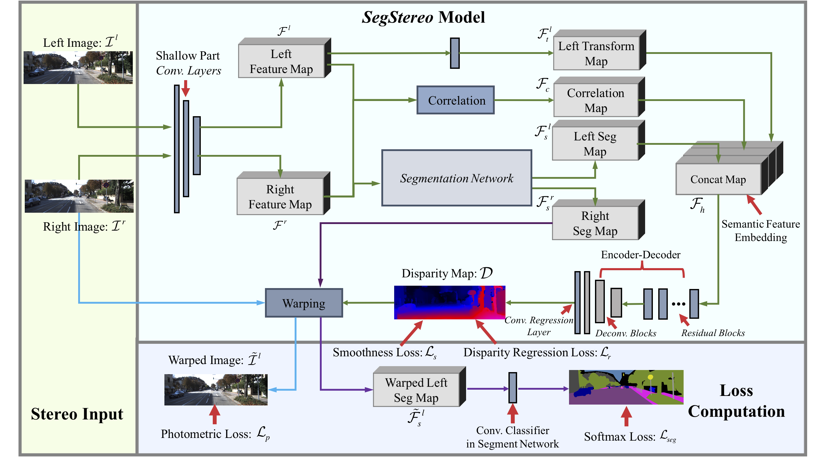
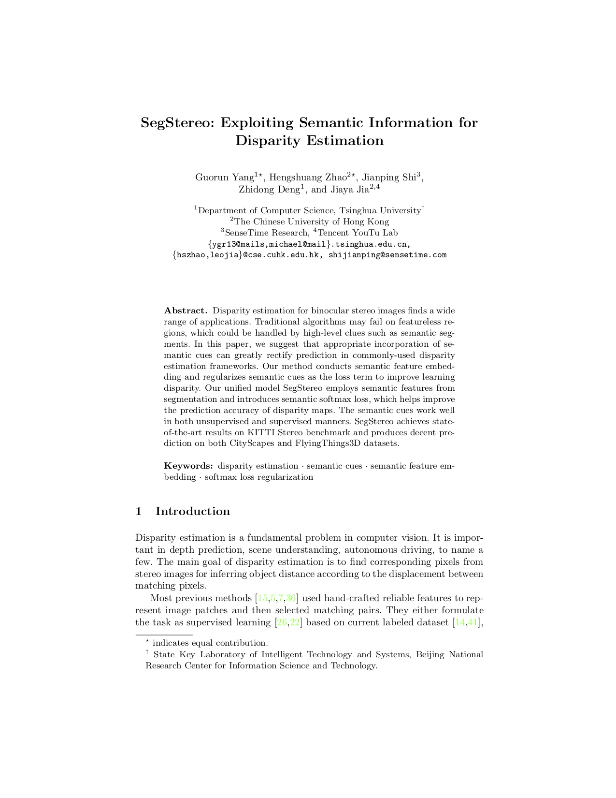
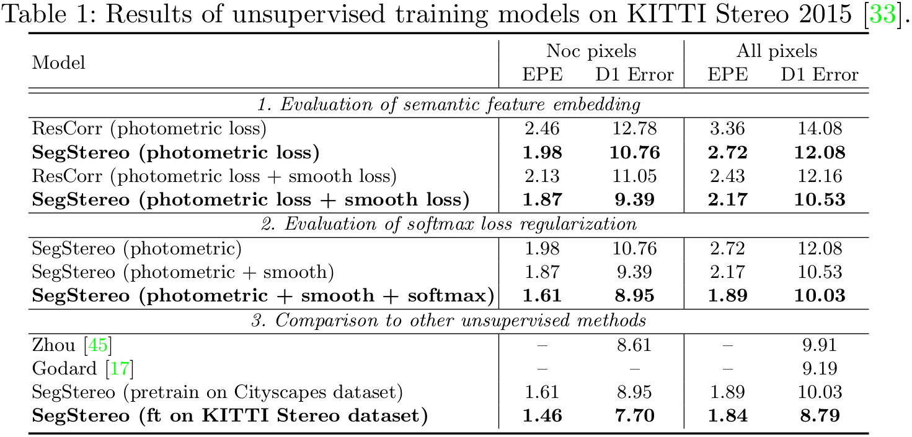
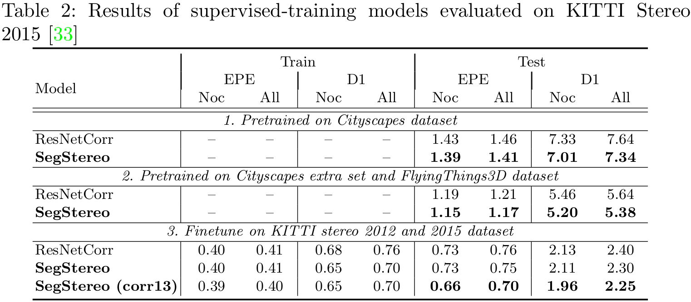
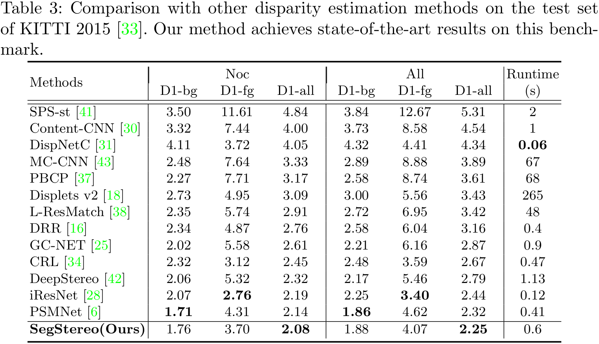
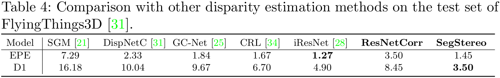
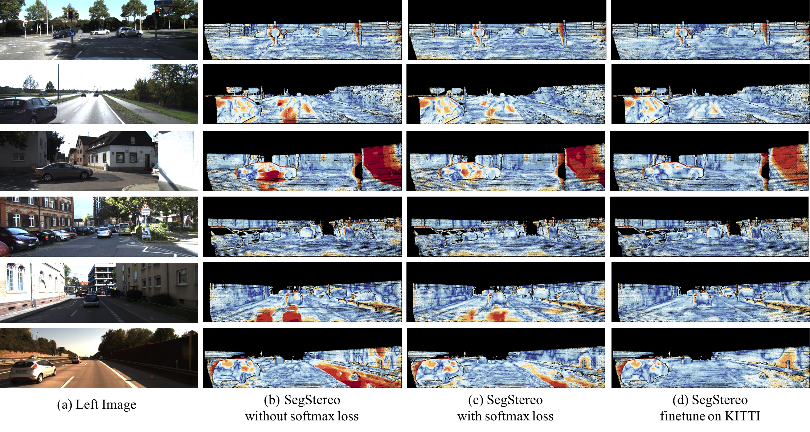
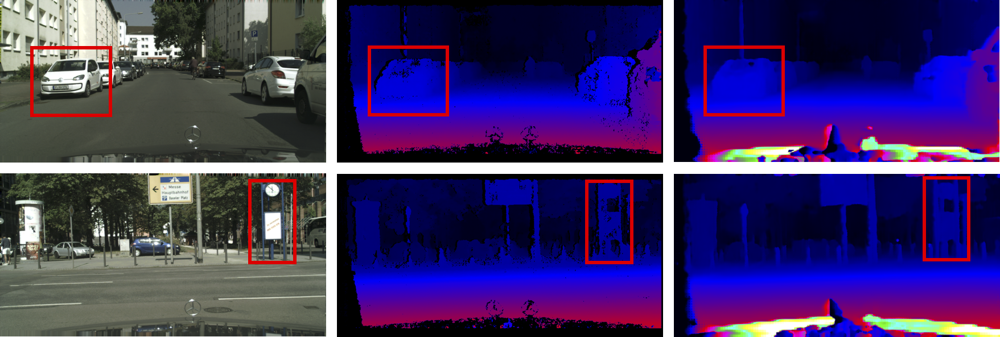
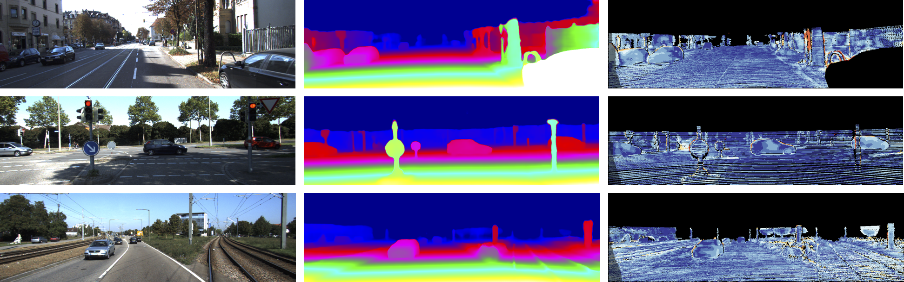

Guorun Yang1* Hengshuang Zhao2* Jianping Shi3 Zhidong Deng1 Jiaya Jia2,4
1 Tsinghua Univeristy
2 The Chinese Univeristy of Hong Kong
3 SenseTime Research
4 Tencent Youtu Lab
[* indicates equal contribution]
|  |
|
Our SegStereo framework. We extract intermediate features F_l and F_r from stereo input. We calculate the cost volume F_c via the correlation operator. The left segmentation feature map F_s^l is aggregated into disparity branch as semantic feature embedding. The right segmentation feature map F_s^r is warped to left view for per-pixel semantic prediction with softmax loss regularization. Both steps incorporate semantic information to improve disparity estimation. The SegStereo framework enables both unsupervised and supervised learning, using photometric loss L_p or disparity regression loss L_r. |
Abstract
Disparity estimation for binocular stereo images finds a wide range of applications. Traditional algorithms may fail on featureless regions, which could be handled by high-level clues such as semantic segments. In this paper, we suggest that appropriate incorporation of semantic cues can greatly rectify prediction in commonly-used disparity estimation frameworks. Our method conducts semantic feature embedding and regularizes semantic cues as the loss term to improve learning disparity. Our unified model SegStereo employs semantic features from segmentation and introduces semantic softmax loss, which helps improve the prediction accuracy of disparity maps. The semantic cues work well in both unsupervised and supervised manners. SegStereo achieves state-of-the-art results on KITTI Stereo benchmark and produces decent prediction on both CityScapes and FlyingThings3D datasets.
Download
|  | "SegStereo: Exploiting Semantic Information for Disparity Estimation"
Guorun Yang*, Hengshuang Zhao*, Jianping Shi, Zhidong Deng, Jiaya Jia. European Conference on Computer Vision (ECCV), 2018. Top ranking performance in KITTI Stereo Benchmark. [Predictions-unsup_segstereo_kitti_ft]] |
Performance
|  |  |
|  |  |
Visualization
|  |
|
Qualitative examples of unsupervised SegStereo models on KITTI Stereo 2015 dataset. With the guidance of softmax regularization and additional fine-tune process, the accuracy of disparity is improved. |
|  |
|
Qualitative examples of unsupervised-learning version of the SegStereo model on CityScapes validation set. From left to right: left input images, disparity maps predicted by SGM algorithm, and our disparity maps. |
|  |
|
Supervised-learning results on KITTI Stereo 2015 test sets. By incorporating semantic information, our method is able to estimate accurate disparity. From left to right, we show left input images, disparity predictions of SegStereo, and error maps. |
 |
|
Qualitative examples of ResNetCorr and SegStereo model on FlyingThings3D validation set. From left to right, left images, ground-truth, ResNet-Corr results and SegStereo results. |
Video
Demo video processed by SegStereo on KITTI and Cityscapes datasets:
Last update: Aug. 18, 2018